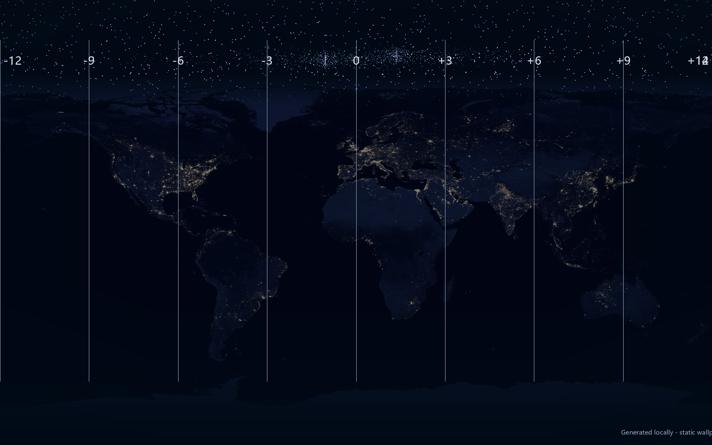

Projects / Desktop software
World Time Wallpaper
A night-world-map wallpaper paired with a live Rainmeter clock strip for ten cities.
Python / PillowRainmeterPowerShell / Windows
Preview


How it works
A Python script generates the map wallpaper from NASA Earth city-lights imagery. The Rainmeter skin draws the clock strip over the wallpaper and updates the displayed times.
PowerShell scripts install the skin, create a Windows startup shortcut, and check every five minutes that Rainmeter and the overlay are running.
Scope and credits
The preview is a saved image, not a browser-based live clock. The current Rainmeter skin uses fixed UTC offsets, so cities that observe daylight saving time need seasonal offset changes.
Earth city-lights imagery: NASA via Wikimedia Commons ↗. The project source retains its MIT license ↗.